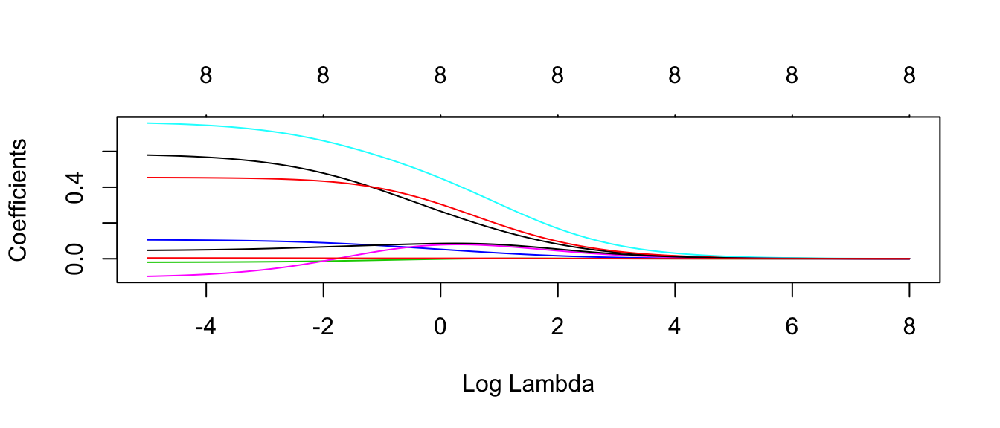
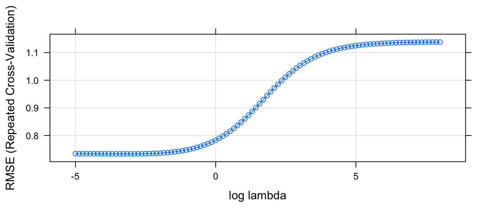
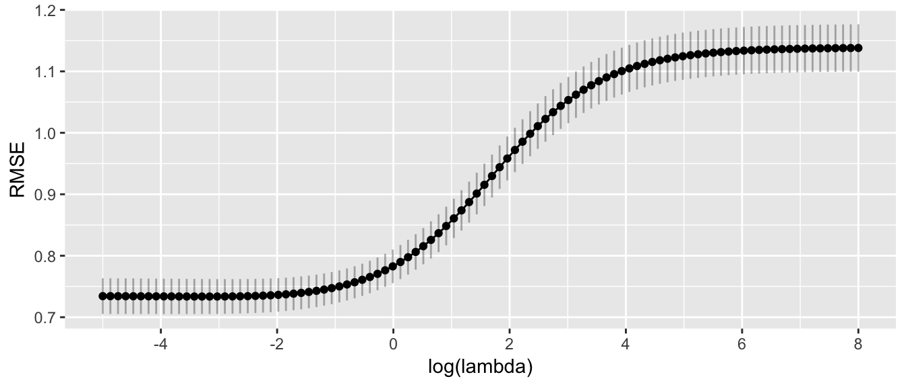
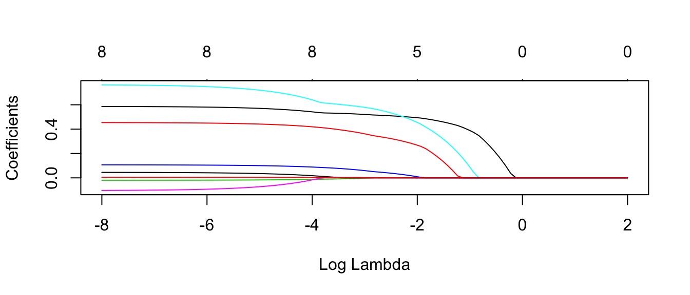
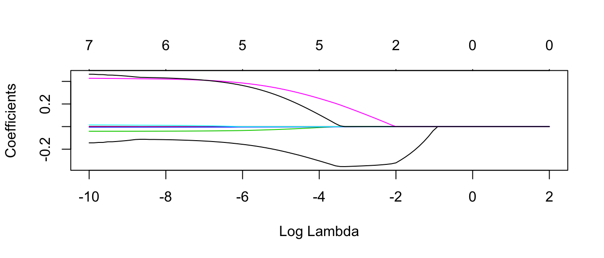
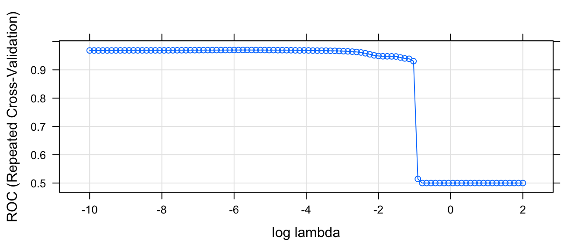

Chapter 6 Model Selection and Regularization
library(dplyr) # data frame manipulations
library(ggplot2) # plotting
library(caret)
library(glmnet)6.1 Stepwise selection using AIC
Many researchers use forward or backward stepwise feature selection for both linear models or generalized linear models. There are a number of functions in R to facilitate this, notatbly add1, drop1 and step.
We have a data set from the faraway package that has some information about each of the 50 US states. We’ll use this to select a number of usefule covariates for predicting the states Life Expectancy.
library(faraway)
state.data <- state.x77 %>% data.frame() %>%
mutate( State = rownames(.)) %>%
mutate( HS.Grad.2 = HS.Grad^2,
Income.2 = Income^2 )
# add a few squared terms to account for some curvature.It is often necessary to compare models that are not nested. For example, I might want to compare \[y=\beta_{0}+\beta_{1}x+\epsilon\] vs \[y=\beta_{0}+\beta_{2}w+\epsilon\]
This comparison comes about naturally when doing forward model selection and we are looking for the “best” covariate to add to the model first.
Akaike introduced his criterion (which he called “An Information Criterion”) as \[AIC=\underset{\textrm{decreases if RSS decreases}}{\underbrace{-2\,\log L\left(\hat{\boldsymbol{\beta}},\hat{\sigma}|\,\textrm{data}\,\right)}}+\underset{\textrm{increases as p increases}}{\underbrace{2p}}\] where \(L\left(\hat{\boldsymbol{\beta}}|\,\textrm{data}\,\right)\) is the likelihood function and \(p\) is the number of elements in the \(\hat{\boldsymbol{\beta}}\) vector and we regard a lower AIC value as better. Notice the \(2p\) term is essentially a penalty on adding addition covariates so to lower the AIC value, a new predictor must lower the negative log likelihood more than it increases the penalty.
To convince ourselves that the first summand decreases with decreasing RSS in the standard linear model, we examine the likelihood function \[\begin{aligned} f\left(\boldsymbol{y}\,|\,\boldsymbol{\beta},\sigma,\boldsymbol{X}\right) &= \frac{1}{\left(2\pi\sigma^{2}\right)^{n/2}}\exp\left[-\frac{1}{2\sigma^{2}}\left(\boldsymbol{y}-\boldsymbol{X}\boldsymbol{\beta}\right)^{T}\left(\boldsymbol{y}-\boldsymbol{X}\boldsymbol{\beta}\right)\right] \\ &= L\left(\boldsymbol{\beta},\sigma\,|\,\boldsymbol{y},\boldsymbol{X}\right) \end{aligned}\] and we could re-write this as \[\begin{aligned} \log L\left(\hat{\boldsymbol{\beta}},\hat{\sigma}\,|\,\textrm{data}\right) &= -\log\left(\left(2\pi\hat{\sigma}^{2}\right)^{n/2}\right)-\frac{1}{2\hat{\sigma}^{2}}\left(\boldsymbol{y}-\boldsymbol{X}\hat{\boldsymbol{\beta}}\right)^{T}\left(\boldsymbol{y}-\boldsymbol{X}\hat{\boldsymbol{\beta}}\right) \\ &= -\frac{n}{2}\log\left(2\pi\hat{\sigma}^{2}\right)-\frac{1}{2\hat{\sigma}^{2}}\left(\boldsymbol{y}-\boldsymbol{X}\hat{\boldsymbol{\beta}}\right)^{T}\left(\boldsymbol{y}-\boldsymbol{X}\hat{\boldsymbol{\beta}}\right) \\ &= -\frac{1}{2}\left[n\log\left(2\pi\hat{\sigma}^{2}\right)+\frac{1}{\hat{\sigma}^{2}}\left(\boldsymbol{y}-\boldsymbol{X}\hat{\boldsymbol{\beta}}\right)^{T}\left(\boldsymbol{y}-\boldsymbol{X}\hat{\boldsymbol{\beta}}\right)\right] \\ &= -\frac{1}{2}\left[+n\log\left(2\pi\right)+n\log\hat{\sigma}^{2}+\frac{1}{\hat{\sigma}^{2}}RSS\right] \end{aligned}\]
It isn’t clear what we should do with the \(n\log\left(2\pi\right)\) term in the \(\log L()\) function. There are some compelling reasons to ignore it and just use the second, and there are reasons to use both terms. Unfortunately, statisticians have not settled on one convention or the other and different software packages might therefore report different values for AIC.
As a general rule of thumb, if the difference in AIC values is less than two then the models are not significantly different, differences between 2 and 4 AIC units are marginally significant and any difference greater than 4 AIC units is highly significant.
Notice that while this allows us to compare models that are not nested, it does require that the same data are used to fit both models. Because I could start out with my data frame including both \(x\) and \(x^{2}\), (or more generally \(x\) and \(f\left(x\right)\) for some function \(f()\)) you can regard a transformation of a covariate as “the same data”. However, a transformation of a y-variable is not and therefore we cannot use AIC to compare a models log(y) ~ x versus the model y ~ x.
Another criterion that might be used is Bayes Information Criterion (BIC) which is
\[BIC=-2\,\log L\left(\hat{\boldsymbol{\beta}},\hat{\sigma}|\,\textrm{data}\,\right)+p\log n\]
and this criterion punishes large models more than AIC does (because \(\log n>2\) for \(n\ge8\))
The AIC value of a linear model can be found using the AIC() on a lm() object.
m1 <- lm(Life.Exp ~ Income + Income.2 + Murder + Frost, data=state.data)
m2 <- lm(Life.Exp ~ Illiteracy + Murder + Frost, data=state.data)
AIC(m1)## [1] 121.4293AIC(m2)## [1] 124.2947Because the AIC value for the first model is lower, we would prefer the first model that includes both Income and Income.2 compared to model 2, which was Life.Exp ~ Illiteracy+Murder+Frost.
6.1.1 Adjusted R-sq
One of the problems with \(R^{2}\) is that it makes no adjustment for how many parameters in the model. Recall that \(R^{2}\) was defined as \[R^{2}=\frac{RSS_{S}-RSS_{C}}{RSS_{S}}=1-\frac{RSS_{C}}{RSS_{S}}\] where the simple model was the intercept only model. We can create an \(R_{adj}^{2}\) statistic that attempts to add a penalty for having too many parameters by defining \[R_{adj}^{2}=1-\frac{RSS_{C}/\left(n-p\right)}{RSS_{S}/\left(n-1\right)}\] With this adjusted definition, adding a variable to the model that has no predictive power will decrease \(R_{adj}^{2}\).
6.1.2 Example
Returning to the life expectancy data, we could start with a simple model add covariates to the model that have the lowest AIC values. R makes this easy with the function add1() which will take a linear model (which includes the data frame that originally defined it) and will sequentially add all of the possible terms that are not currently in the model and report the AIC values for each model.
# Define the biggest model I wish to consider
biggest <- Life.Exp ~ Population + Income + Illiteracy + Murder +
HS.Grad + Frost + Area + HS.Grad.2 + Income.2
# Define the model I wish to start with
m <- lm(Life.Exp ~ 1, data=state.data)
add1(m, scope=biggest) # what is the best addition to make?## Single term additions
##
## Model:
## Life.Exp ~ 1
## Df Sum of Sq RSS AIC
## <none> 88.299 30.435
## Population 1 0.409 87.890 32.203
## Income 1 10.223 78.076 26.283
## Illiteracy 1 30.578 57.721 11.179
## Murder 1 53.838 34.461 -14.609
## HS.Grad 1 29.931 58.368 11.737
## Frost 1 6.064 82.235 28.878
## Area 1 1.017 87.282 31.856
## HS.Grad.2 1 27.414 60.885 13.848
## Income.2 1 7.464 80.835 28.020Clearly the additiona of Murder to the model results in the lowest AIC value, so we will add Murder to the model. Notice the <none> row corresponds to the model m which we started with and it has a RSS=88.299. For each model considered, R will calculate the RSS_{C} for the new model and will calculate the difference between the starting model and the more complicated model and display this in the Sum of Squares column.
m <- update(m, . ~ . + Murder) # add murder to the model
add1(m, scope=biggest) # what should I add next?## Single term additions
##
## Model:
## Life.Exp ~ Murder
## Df Sum of Sq RSS AIC
## <none> 34.461 -14.609
## Population 1 4.0161 30.445 -18.805
## Income 1 2.4047 32.057 -16.226
## Illiteracy 1 0.2732 34.188 -13.007
## HS.Grad 1 4.6910 29.770 -19.925
## Frost 1 3.1346 31.327 -17.378
## Area 1 0.4697 33.992 -13.295
## HS.Grad.2 1 4.4396 30.022 -19.505
## Income.2 1 1.8972 32.564 -15.441There is a companion function to add1() that finds the best term to drop. It is conveniently named drop1() but here the scope parameter defines the smallest model to be considered.
It would be nice if all of this work was automated. Again, R makes our life easy and the function step() does exactly this. The set of models searched is determined by the scope argument which can be a list of two formulas with components upper and lower or it can be a single formula, or it can be blank. The right-hand-side of its lower component defines the smallest model to be considered and the right-hand-side of the upper component defines the largest model to be considered. If scope is a single formula, it specifies the upper component, and the lower model taken to be the intercept-only model. If scope is missing, the initial model is used as the upper model.
smallest <- Life.Exp ~ 1
biggest <- Life.Exp ~ Population + Income + Illiteracy +
Murder + HS.Grad + Frost + Area + HS.Grad.2 + Income.2
m <- lm(Life.Exp ~ Income, data=state.data)
step(m, scope=list(lower=smallest, upper=biggest))## Start: AIC=26.28
## Life.Exp ~ Income
##
## Df Sum of Sq RSS AIC
## + Murder 1 46.020 32.057 -16.226
## + Illiteracy 1 21.109 56.968 12.523
## + HS.Grad 1 19.770 58.306 13.684
## + Income.2 1 19.062 59.015 14.288
## + HS.Grad.2 1 17.193 60.884 15.847
## + Area 1 5.426 72.650 24.682
## + Frost 1 3.188 74.889 26.199
## <none> 78.076 26.283
## + Population 1 1.781 76.295 27.130
## - Income 1 10.223 88.299 30.435
##
## Step: AIC=-16.23
## Life.Exp ~ Income + Murder
##
## Df Sum of Sq RSS AIC
## + Frost 1 3.918 28.138 -20.745
## + Income.2 1 3.036 29.021 -19.200
## + Population 1 2.552 29.504 -18.374
## + HS.Grad 1 2.388 29.668 -18.097
## + HS.Grad.2 1 2.199 29.857 -17.780
## <none> 32.057 -16.226
## - Income 1 2.405 34.461 -14.609
## + Illiteracy 1 0.011 32.046 -14.242
## + Area 1 0.000 32.057 -14.226
## - Murder 1 46.020 78.076 26.283
##
## Step: AIC=-20.74
## Life.Exp ~ Income + Murder + Frost
##
## Df Sum of Sq RSS AIC
## + HS.Grad 1 2.949 25.189 -24.280
## + HS.Grad.2 1 2.764 25.375 -23.914
## + Income.2 1 2.017 26.121 -22.465
## + Population 1 1.341 26.797 -21.187
## <none> 28.138 -20.745
## + Illiteracy 1 0.950 27.189 -20.461
## + Area 1 0.147 27.991 -19.007
## - Income 1 3.188 31.327 -17.378
## - Frost 1 3.918 32.057 -16.226
## - Murder 1 46.750 74.889 26.199
##
## Step: AIC=-24.28
## Life.Exp ~ Income + Murder + Frost + HS.Grad
##
## Df Sum of Sq RSS AIC
## + Population 1 1.887 23.302 -26.174
## + Income.2 1 1.864 23.326 -26.124
## - Income 1 0.182 25.372 -25.920
## <none> 25.189 -24.280
## + HS.Grad.2 1 0.218 24.972 -22.714
## + Illiteracy 1 0.131 25.058 -22.541
## + Area 1 0.058 25.131 -22.395
## - HS.Grad 1 2.949 28.138 -20.745
## - Frost 1 4.479 29.668 -18.097
## - Murder 1 32.877 58.067 15.478
##
## Step: AIC=-26.17
## Life.Exp ~ Income + Murder + Frost + HS.Grad + Population
##
## Df Sum of Sq RSS AIC
## - Income 1 0.006 23.308 -28.161
## <none> 23.302 -26.174
## + Income.2 1 0.790 22.512 -25.899
## - Population 1 1.887 25.189 -24.280
## + HS.Grad.2 1 0.006 23.296 -24.187
## + Illiteracy 1 0.004 23.298 -24.182
## + Area 1 0.000 23.302 -24.174
## - Frost 1 3.037 26.339 -22.048
## - HS.Grad 1 3.495 26.797 -21.187
## - Murder 1 34.739 58.041 17.456
##
## Step: AIC=-28.16
## Life.Exp ~ Murder + Frost + HS.Grad + Population
##
## Df Sum of Sq RSS AIC
## <none> 23.308 -28.161
## + Income.2 1 0.031 23.277 -26.229
## + HS.Grad.2 1 0.007 23.301 -26.177
## + Income 1 0.006 23.302 -26.174
## + Illiteracy 1 0.004 23.304 -26.170
## + Area 1 0.001 23.307 -26.163
## - Population 1 2.064 25.372 -25.920
## - Frost 1 3.122 26.430 -23.877
## - HS.Grad 1 5.112 28.420 -20.246
## - Murder 1 34.816 58.124 15.528##
## Call:
## lm(formula = Life.Exp ~ Murder + Frost + HS.Grad + Population,
## data = state.data)
##
## Coefficients:
## (Intercept) Murder Frost HS.Grad Population
## 7.103e+01 -3.001e-01 -5.943e-03 4.658e-02 5.014e-05Notice that our model selected by step() is not the same model we obtained when we started with the biggest model and removed things based on p-values.
The log-likelihood is only defined up to an additive constant, and there are different conventional constants used. This is more annoying than anything because all we care about for model selection is the difference between AIC values of two models and the additive constant cancels. The only time it matters is when you have two different ways of extracting the AIC values. Recall the model we fit using the top-down approach was
# m1 was
m1 <- lm(Life.Exp ~ Income + Murder + Frost + Income.2, data = state.data)
AIC(m1)## [1] 121.4293and the model selected by the stepwise algorithm was
m3 <- lm(Life.Exp ~ Murder + Frost + HS.Grad + Population, data = state.data)
AIC(m3)## [1] 115.7326Because step() and AIC() are following different conventions the absolute value of the AICs are different, but the difference between the two is constant no matter which function we use.
First we calculate the difference using the AIC() function:
AIC(m1) - AIC(m3)## [1] 5.696681and next we use add1() on both models to see what the AIC values for each.
add1(m1, scope=biggest)## Single term additions
##
## Model:
## Life.Exp ~ Income + Murder + Frost + Income.2
## Df Sum of Sq RSS AIC
## <none> 26.121 -22.465
## Population 1 0.42412 25.697 -21.283
## Illiteracy 1 0.10097 26.020 -20.658
## HS.Grad 1 2.79527 23.326 -26.124
## Area 1 1.69309 24.428 -23.815
## HS.Grad.2 1 2.79698 23.324 -26.127add1(m3, scope=biggest)## Single term additions
##
## Model:
## Life.Exp ~ Murder + Frost + HS.Grad + Population
## Df Sum of Sq RSS AIC
## <none> 23.308 -28.161
## Income 1 0.0060582 23.302 -26.174
## Illiteracy 1 0.0039221 23.304 -26.170
## Area 1 0.0007900 23.307 -26.163
## HS.Grad.2 1 0.0073439 23.301 -26.177
## Income.2 1 0.0314248 23.277 -26.229Using these results, we can calculate the difference in AIC values to be the same as we calculated before \[\begin{aligned} -22.465--28.161 &= -22.465+28.161 \\ &= 5.696 \end{aligned}\]
smallest <- Life.Exp ~ 1
biggest <- Life.Exp ~ Population + Income + Illiteracy +
Murder + HS.Grad + Frost + Area
m <- lm(Life.Exp ~ Income, data=state.data)
step(m, scope=list(lower=smallest, upper=biggest))## Start: AIC=26.28
## Life.Exp ~ Income
##
## Df Sum of Sq RSS AIC
## + Murder 1 46.020 32.057 -16.226
## + Illiteracy 1 21.109 56.968 12.523
## + HS.Grad 1 19.770 58.306 13.684
## + Area 1 5.426 72.650 24.682
## + Frost 1 3.188 74.889 26.199
## <none> 78.076 26.283
## + Population 1 1.781 76.295 27.130
## - Income 1 10.223 88.299 30.435
##
## Step: AIC=-16.23
## Life.Exp ~ Income + Murder
##
## Df Sum of Sq RSS AIC
## + Frost 1 3.918 28.138 -20.745
## + Population 1 2.552 29.504 -18.374
## + HS.Grad 1 2.388 29.668 -18.097
## <none> 32.057 -16.226
## - Income 1 2.405 34.461 -14.609
## + Illiteracy 1 0.011 32.046 -14.242
## + Area 1 0.000 32.057 -14.226
## - Murder 1 46.020 78.076 26.283
##
## Step: AIC=-20.74
## Life.Exp ~ Income + Murder + Frost
##
## Df Sum of Sq RSS AIC
## + HS.Grad 1 2.949 25.189 -24.280
## + Population 1 1.341 26.797 -21.187
## <none> 28.138 -20.745
## + Illiteracy 1 0.950 27.189 -20.461
## + Area 1 0.147 27.991 -19.007
## - Income 1 3.188 31.327 -17.378
## - Frost 1 3.918 32.057 -16.226
## - Murder 1 46.750 74.889 26.199
##
## Step: AIC=-24.28
## Life.Exp ~ Income + Murder + Frost + HS.Grad
##
## Df Sum of Sq RSS AIC
## + Population 1 1.887 23.302 -26.174
## - Income 1 0.182 25.372 -25.920
## <none> 25.189 -24.280
## + Illiteracy 1 0.131 25.058 -22.541
## + Area 1 0.058 25.131 -22.395
## - HS.Grad 1 2.949 28.138 -20.745
## - Frost 1 4.479 29.668 -18.097
## - Murder 1 32.877 58.067 15.478
##
## Step: AIC=-26.17
## Life.Exp ~ Income + Murder + Frost + HS.Grad + Population
##
## Df Sum of Sq RSS AIC
## - Income 1 0.006 23.308 -28.161
## <none> 23.302 -26.174
## - Population 1 1.887 25.189 -24.280
## + Illiteracy 1 0.004 23.298 -24.182
## + Area 1 0.000 23.302 -24.174
## - Frost 1 3.037 26.339 -22.048
## - HS.Grad 1 3.495 26.797 -21.187
## - Murder 1 34.739 58.041 17.456
##
## Step: AIC=-28.16
## Life.Exp ~ Murder + Frost + HS.Grad + Population
##
## Df Sum of Sq RSS AIC
## <none> 23.308 -28.161
## + Income 1 0.006 23.302 -26.174
## + Illiteracy 1 0.004 23.304 -26.170
## + Area 1 0.001 23.307 -26.163
## - Population 1 2.064 25.372 -25.920
## - Frost 1 3.122 26.430 -23.877
## - HS.Grad 1 5.112 28.420 -20.246
## - Murder 1 34.816 58.124 15.528##
## Call:
## lm(formula = Life.Exp ~ Murder + Frost + HS.Grad + Population,
## data = state.data)
##
## Coefficients:
## (Intercept) Murder Frost HS.Grad Population
## 7.103e+01 -3.001e-01 -5.943e-03 4.658e-02 5.014e-05This same approach works for glm objects as well. Unfortunately there isn’t a way to make this work via the caret package, and so we can’t do quite the same thing in general.
6.2 Model Regularization via LASSO and Ridge Regression
For linear and generalized linear models, we might consider adding a penalty to the residual sum of squares function (RSS), which we seek to minimize. By minimizing RSS with the adding a penalty in the form of either \(\lambda\sum |\beta_j|\) or \(\lambda\sum \beta_j^2\) we get either LASSO or ridge regression. Via Lagrange multipliers, it is possible to show that this is equivlant to minimizing
\[\textrm{LASSO}: \;\; \sum_{i=1}^n (y_i - X_{i,\cdot}\beta)^2 \; \textrm{ where } \sum_{i=1}^p | \beta_j | \le s\] \[\textrm{Ridge Reg}: \;\; \sum_{i=1}^n (y_i - X_{i,\cdot}\beta)^2 \; \textrm{ where } \sum_{i=1}^p \beta_j ^2 \le s\]
Even though the name for ridge regression includes the term regression, these techniques work equally well in both the regression and classification situations. Unsurprisingly the methods for fitting these models in caret are similar, and will rely on the package glmnet. We will first present a regression example using both methods and then move to a classification example.
6.2.1 Regression
For this example, we’ll consider data from a study about prostate cancer and we are interested in predicting a prostate specific antigen that is highly elevated in cancerous tumors.
data('prostate', package='faraway')# Define how we will do our cross validation to select the tuning parameter
ctrl <- trainControl( method='repeatedcv', repeats=4, number=5,
preProcOptions = c('center','scale')) # center and scale the covariates first!# Define the grid of tuning parameters we will consider
grid <- data.frame(
alpha = 0, # 0 => Ridge Regression
lambda = exp(seq(-5, 8, length=100)) ) # Figured out this range via trial and error
model <- train( lpsa ~ ., data=prostate, method='glmnet',
trControl=ctrl, tuneGrid=grid,
lambda= grid$lambda ) # Not sure why lambda isn't being passed in...
plot.glmnet(model$finalModel, xvar='lambda')
#autoplot(model$finalModel, xvar = 'lambda' ) # bug in ggfortify, doesn't change x axisEach line corresponds to the \(\beta_j\) coefficient for each \(\lambda\) value. The number at the top is the number of non-zero coefficients for that particular \(\lambda\) value.
Next we need to figure out the best value of \(\lambda\) that we considered.
plot.train(model, xTrans = log, xlab='log lambda')
So based on this graph, we want to choose \(\lambda\) to be as large a possible without increasing RMSE too much. So \(\log( \lambda ) \approx -2\) seems about right. And therefore \(\lambda \approx e^{-2.35} = 0.095\). However, we also know that this value is likely to change from run to run and we ought to consider a slightly larger value for \(\lambda\). It would be nice if this graph showed the standard error of the estimated RMSE.
num = 20 # We did 20 hold out sets (4x5 fold CV)
str( model$results ) # data.frame with model metrics and standard deviations## 'data.frame': 100 obs. of 8 variables:
## $ alpha : num 0 0 0 0 0 0 0 0 0 0 ...
## $ lambda : num 0.00674 0.00768 0.00876 0.00999 0.01139 ...
## $ RMSE : num 0.732 0.732 0.732 0.732 0.732 ...
## $ Rsquared : num 0.613 0.613 0.613 0.613 0.613 ...
## $ MAE : num 0.572 0.572 0.572 0.572 0.572 ...
## $ RMSESD : num 0.109 0.109 0.109 0.109 0.109 ...
## $ RsquaredSD: num 0.117 0.117 0.117 0.117 0.117 ...
## $ MAESD : num 0.0974 0.0973 0.0973 0.0972 0.0971 ...ggplot(model$results, aes( x=log(lambda), y=RMSE )) +
geom_point( ) +
geom_line( ) +
geom_linerange(aes( ymin= RMSE - RMSESD/sqrt(num), ymax= RMSE+RMSESD/sqrt(num)), alpha=0.3) +
scale_x_continuous(breaks=seq(-6,8, by=2))
Given this, I feel ok chosing anything from about \(\log(\lambda) \in [-2, 0]\), but I would like something a bit more precise. One method suggested by Karl Breiman is to chose the largest value of \(\lambda\) that is within 1 Standard Error of the best fitting \(\lambda\). Given this, I think approximately \(\log(\lambda)=-0.5\) which is \(\lambda \approx 0.6\).
# Best tuning value
model$bestTune## alpha lambda
## 13 0 0.03257395best.index <- which.min( model$results[, 'RMSE'] )
# Best tuning value within 1 SE of optimal
# Num is the number of hold out sets considered. 4x5=20
bestTuneOneSE <- model$results %>%
mutate( index = 1:n() ) %>%
filter( RMSE <= min( RMSE + RMSESD/sqrt(num) ) ) %>%
arrange(desc(lambda)) %>%
slice(1)
bestTuneOneSE## # A tibble: 1 x 9
## alpha lambda RMSE Rsquared MAE RMSESD RsquaredSD
## <dbl> <dbl> <dbl> <dbl> <dbl> <dbl> <dbl>
## 1 0 0.4502376 0.7537884 0.6040617 0.6001758 0.1057345 0.1138866
## # ... with 2 more variables: MAESD <dbl>, index <int>bestTuneOneSE.index <- bestTuneOneSE$indexWhile model$finalModel contains the model fit using the \(\lambda\) with the minimum RMSE, we might want to refit the using the “One SE” \(\lambda\), which can be done via:
# Grab the tuning parameters for either the best model or bestTuneOneSE
tuneGrid <- model$bestTune
tuneGrid <- bestTuneOneSE %>% dplyr::select(alpha, lambda) %>% as.data.frame()
# fit the model using the tuning parameter selected via CV.
model <- train( lpsa ~ ., data=prostate, method='glmnet',
trControl=ctrl, tuneGrid=tuneGrid,
lambda= tuneGrid$lambda ) # Not sure why lambda isn't being passed in...and we could make predictions about a new observation using the usual predict command.
data.to.predict <- data.frame(lcavol=3.5, lweight=3.2, age=55, lbph=-1.4, svi=1, lcp=2.2, gleason=6, pgg45=40)
predict(model, newdata=data.to.predict)## [1] 3.570347We can do a similar analysis via LASSO.
# Define the grid of tuning parameters we will consider
grid <- data.frame(
alpha = 1, # 1 => LASSO
lambda = exp(seq(-8, 2, length=100)) ) # Figured out this range via trial and error
model <- train( lpsa ~ ., data=prostate, method='glmnet',
trControl=ctrl, tuneGrid=grid,
lambda= grid$lambda ) # Not sure why lambda isn't being passed in...## Warning in nominalTrainWorkflow(x = x, y = y, wts = weights, info =
## trainInfo, : There were missing values in resampled performance measures.plot.glmnet(model$finalModel, xvar='lambda')
#autoplot(model$finalModel, xvar = 'lambda' ) # bug in ggfortify, doesn't change x axisEach line corresponds to the \(\beta_j\) coefficient for each \(\lambda\) value. The number at the top is the number of non-zero coefficients for that particular \(\lambda\) value.
Next we need to figure out the best value of \(\lambda\) that we considered.
plot.train(model, xTrans = log, xlab='log lambda')So based on this graph, we want to choose \(\lambda\) to be as large a possible without increasing RMSE too much. So \(\log( \lambda ) \approx -2\) seems about right. That corresponds to \(exp(-2) = 0.135\).
# Best tuning value
model$bestTune## alpha lambda
## 16 1 0.001526392best.index <- which.min( model$results[, 'RMSE'] )
# Best tuning value within 1 SE of optimal
# Num is the number of hold out sets considered. 4x5=20
bestTuneOneSE <- model$results %>%
mutate( index = 1:n() ) %>%
filter( RMSE <= min( RMSE + RMSESD/sqrt(num) ) ) %>%
arrange(desc(lambda)) %>%
slice(1)
bestTuneOneSE## # A tibble: 1 x 9
## alpha lambda RMSE Rsquared MAE RMSESD RsquaredSD
## <dbl> <dbl> <dbl> <dbl> <dbl> <dbl> <dbl>
## 1 1 0.1299762 0.7512206 0.6089074 0.5935968 0.1007947 0.1377407
## # ... with 2 more variables: MAESD <dbl>, index <int>bestTuneOneSE.index <- bestTuneOneSE$indexWhile model$finalModel contains the model fit using the \(\lambda\) with the minimum RMSE, we might want to refit the using the “One SE” \(\lambda\), which can be done via:
# Grab the tuning parameters for either the best model or bestTuneOneSE
tuneGrid <- model$bestTune
tuneGrid <- bestTuneOneSE %>% dplyr::select(alpha, lambda) %>% as.data.frame()
model <- train( lpsa ~ ., data=prostate, method='glmnet',
trControl=ctrl, tuneGrid=tuneGrid,
lambda= tuneGrid$lambda ) # Not sure why lambda isn't being passed in...and we could make predictions about a new observation using the usual predict command.
data.to.predict <- data.frame(lcavol=3.5, lweight=3.2, age=55, lbph=-1.4, svi=1, lcp=2.2, gleason=6, pgg45=40)
predict(model, newdata=data.to.predict)## [1] 3.767876Finally for LASSO, I’m really interested in which covariates are removed from the model.
coef.glmnet( model$finalModel ) ## 9 x 1 sparse Matrix of class "dgCMatrix"
## s0
## (Intercept) 0.7023094972
## lcavol 0.4952040832
## lweight 0.2736129099
## age .
## lbph 0.0121910488
## svi 0.4628840830
## lcp .
## gleason .
## pgg45 0.0002743489In this case, we see that age, lcp, and gleason have been removed from the model.
6.2.2 Classification
For this example, we will consider a classification problem we encountered earlier. Using the Auto dataset in the ISLR package, we will classify each vehicle make into either high or low efficiency and then look to see which covariates we should use in our model using LASSO.
data('Auto', package='ISLR')
Auto <- Auto %>%
mutate( mpg_Grp = factor( ifelse(mpg > median(mpg),'High','Low'),
levels=c('Low','High'))) %>%
dplyr::select(-name, -mpg)# Define how we will do our cross validation to select the tuning parameter
ctrl <- trainControl( method='repeatedcv', repeats=4, number=5,
preProcOptions = c('center','scale'), # center and scale the covariates first!
classProbs = TRUE, # So we generate phat values
summaryFunction = twoClassSummary ) # the summary information
# Define the grid of tuning parameters we will consider
grid <- data.frame(
alpha = 1, # 1 => LASSO
lambda = exp(seq(-10, 2, length=100)) ) # Figured out this range via trial and error
model <- train( mpg_Grp ~ ., data=Auto, method='glmnet',
metric='ROC',
trControl=ctrl, tuneGrid=grid,
lambda= grid$lambda ) # Not sure why lambda isn't being passed in...
plot.glmnet(model$finalModel, xvar='lambda')
#autoplot(model$finalModel, xvar = 'lambda' ) # bug in ggfortify, doesn't change x axisNext we need to figure out the best value of \(\lambda\) that we considered.
plot.train(model, xTrans = log, xlab='log lambda', metric='ROC')
So based on this graph, we want to choose \(\lambda\) to be as large a possible without reducing the AUC statisitc too much. So \(\log( \lambda ) \approx -1\) seems about right. That corresponds to \(exp(-1) = 0.37\).
# Best tuning value
model$bestTune## alpha lambda
## 24 1 0.0007375909best.index <- which.max( model$results[, 'ROC'] )
# Best tuning value within 1 SE of optimal
# Num is the number of hold out sets considered. 4x5=20
bestTuneOneSE <- model$results %>%
mutate( index = 1:n() ) %>%
filter( ROC >= max( ROC - ROC/sqrt(num) ) ) %>%
arrange(desc(lambda)) %>%
slice(1)
bestTuneOneSE## # A tibble: 1 x 9
## alpha lambda ROC Sens Spec ROCSD SensSD
## <dbl> <dbl> <dbl> <dbl> <dbl> <dbl> <dbl>
## 1 1 0.3568988 0.937514 0.8610256 0.9272436 0.03049765 0.04329283
## # ... with 2 more variables: SpecSD <dbl>, index <int>bestTuneOneSE.index <- bestTuneOneSE$indexWhile model$finalModel contains the model fit using the \(\lambda\) with the minimum RMSE, we might want to refit the using the “One SE” \(\lambda\), which can be done via:
# Grab the tuning parameters for either the best model or bestTuneOneSE
tuneGrid <- model$bestTune
tuneGrid <- bestTuneOneSE %>% dplyr::select(alpha, lambda) %>% as.data.frame()
model <- train( mpg_Grp ~ ., data=Auto, method='glmnet',
metric='ROC',
trControl=ctrl, tuneGrid=tuneGrid,
lambda= tuneGrid$lambda ) # Not sure why lambda isn't being passed in...and we could make predictions about a new observation using the usual predict command.
data.to.predict <- data.frame(cylinders=4, displacement=71, horsepower=65, weight=1770, acceleration=18, year=70, origin=3)
predict(model, newdata=data.to.predict)## [1] High
## Levels: Low HighFinally for LASSO, I’m really interested in which covariates are removed from the model.
coef.glmnet( model$finalModel ) ## 8 x 1 sparse Matrix of class "dgCMatrix"
## s0
## (Intercept) 3.127904e-01
## cylinders -3.661655e-02
## displacement .
## horsepower .
## weight -3.776906e-05
## acceleration .
## year .
## origin .In this case, we see that LASSO has selected just cylinders and weight to include in the model.
6.3 Exercises
- ISLR #6.2 parts (a,b) - For parts (a) through (c), indicate which of i. through iv. is correct. Justify your answer.
- The lasso, relative to least squares, is:
- More flexible and hence will give improved prediction accuracy when its increase in bias is less than its decrease in variance.
- More flexible and hence will give improved prediction accuracy when its increase in variance is less than its decrease in bias.
- Less flexible and hence will give improved prediction accuracy when its increase in bias is less than its decrease in variance.
- Less flexible and hence will give improved prediction accuracy when its increase in variance is less than its decrease in bias.
- Repeat (a) for ridge regression relative to least squares.
- The lasso, relative to least squares, is:
- ISLR #6.3 - Suppose we estimate the regression coefficients in a linear regression model by minimizing \[\sum_{i=1}^{n}\left(y_{i}-\beta_{0}-\sum_{j=1}^{p}\beta_{j}x_{ij}\right)^{2}\,\,\,\,\ \textrm{ subject to} \,\, \sum_{j=1}^{p}\left|\beta_{j}\right|\le s\] for a particular value of s. For parts (a) through (e), indicate which of i. through v. is correct. Justify your answer.
- As we increase s from 0, the training RSS will:
- Increase initially, and then eventually start decreasing in an inverted U shape.
- Decrease initially, and then eventually start increasing in a U shape.
- Steadily increase.
- Steadily decrease.
- Remain constant.
- Repeat (a) for test RSS.
- Repeat (a) for variance.
- Repeat (a) for (squared) bias.
- Repeat (a) for the irreducible error.
- As we increase s from 0, the training RSS will:
- ISLR #6.9 In this exercise, we will predict the number of applications received using the other variables in the
Collegedata set available in the ISLR.- Randomly split the data set into equally sized training and test sets using the following code:
library(dplyr) data('College', package='ISLR') set.seed(2112) train = College %>% sample_frac(0.5) test = setdiff(College, train)- Fit a linear model using least squares on the training set, and report estimated error rate from fitting the data to the training set as well as the error obtained from predicting values in the test set.
- Fit a ridge regression model on the training set, with \(\lambda\) chosen using 4x5 repeated cross-validation and select the best \(\lambda\). Report the estimated error rate from the cross-validation as well as the observed test error obtained.
- Fit a ridge regression model on the training set, with \(\lambda\) chosen using 4x5 repeated cross-validation and select the “OneSE” \(\lambda\). Report the estimated error rate from the cross-validation as well as the observed test error obtained.
- Fit a lasso model on the training set, with \(\lambda\) chosen using 4x5 repeated cross-validation and select the best \(\lambda\). Report the estimated error rate from the cross-validation as well as the observed test error obtained. Also report the number of non-zero coefficient estimates.
- Fit a lasso model on the training set, with \(\lambda\) chosen using 4x5 repeated cross-validation and select the “OneSE” \(\lambda\). Report the estimated error rate from the cross-validation as well as the observed test error obtained. Also report the number of non-zero coefficient estimates.
- Comment on the results obtained. How accurately can we predict the number of college applications received? Is there much difference among the test errors resulting from these five approaches? How well does the estimated error rates correspond to the error rates you obtained when you fit your model to the test set?